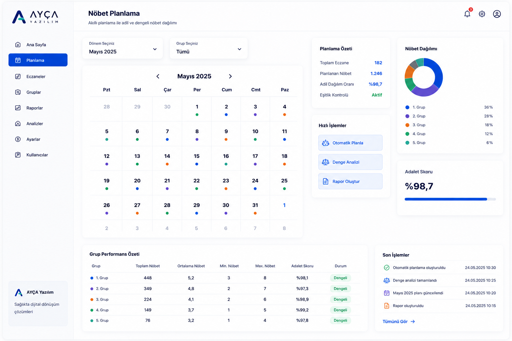

Eczane Odaları İçin Akıllı Nöbet Planlama Platformu
AYÇA Nöbet; eczacı odalarının manuel nöbet planlama süreçlerini dakikalar içinde dijital ortama taşır. Grup dengesi, bayram adaleti, eşlenik analizleri ve yönetmelik kontrollerini tek platform üzerinden yönetmenizi sağlar.

Planlama Sürecini Adil, Hızlı ve Şeffaf Hale Getirin
Manuel planlama yükünü azaltan, kararları görünür hale getiren ve nöbet dağılımını denetlenebilir bir yapıya taşıyan akıllı çözüm.
Adalet Algoritması
Her eczanenin nöbet yükünü matematiksel olarak dengeler ve kararların şeffaf şekilde izlenmesini sağlar.
Grup ve Bölge Dengesi
Alt gruplar, bölgesel kurallar ve eşlenik ilişkileri aynı anda değerlendirerek dengeli planlar oluşturur.
Bayram & Arefe Adaleti
Yıllar boyunca oluşan nöbet yükünü analiz eder, bayram ve arefe dağılımlarını adil şekilde yönetir.
Şeffaf Analiz ve Raporlama
Planlama sürecindeki tüm kararları raporlarla destekler, denetlenebilir ve güvenilir bir yapı sunar.
AYÇA Nöbet’i 2 Dakikada İnceleyin
Video içerisinde plan oluşturma, analiz ekranları ve raporlama modüllerini adım adım inceleyebilirsiniz.